The SDD guide
From a thought to a shipped, traceable feature.
AFX gives you three ways to work — Dash, Sprint, and the full four-file spec — all speaking the same language. This guide covers which to pick, every command and gate, what each document looks like, and the controls that drive it all. No prior SDD experience assumed.
You don't have to read all of this.
The whole workflow is four moves. Do these — come back for the detail only when a project actually asks for it.
- Open the AFX panel and click Start a sprint. Give your feature a name.
- The agent drafts the spec, then design, then tasks — one step at a time. Read each, push back in chat, click Approve.
- Click Code. It builds each task with links back to the spec.
- Click Verify, then Sign Off. Done — with a spec, tasks, and traceable code to show for it.
That's spec-driven development. Everything below is depth you can pull in when you want it — not homework.
01One discipline, three sizes
The single most misunderstood thing about AFX: you don't choose between "structure" and "no structure." You choose how much — and you can change your mind later without losing anything.
All three shapes share the same bones: ### N.N task IDs, the same six-column Work Sessions log, and the same [FR-N] / [DES-*] anchor vocabulary. That's why graduation is lossless — moving up carries your tasks, checkboxes, file scopes, and history byte-for-byte.
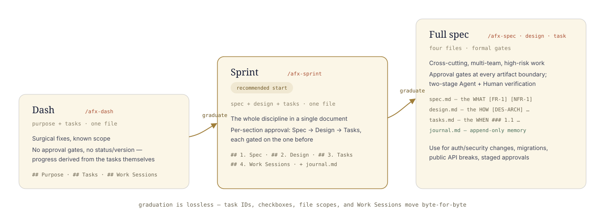
Three shapes, one discipline. Graduate when scope grows — never rewrite. illustration
02Which one do I need?
Three questions, in order. The first "yes" is your answer.
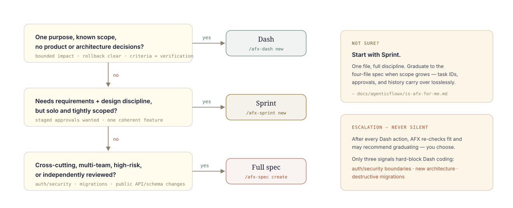
The chooser. When in doubt: Sprint. illustration
Side by side
| Dashsurgical | Sprintrecommended start | Full specformal | |
|---|---|---|---|
| Start with | /afx-dash new | /afx-sprint new | /afx-spec create |
| Files | one — <name>.md | one + journal.md | four — spec · design · tasks · journal |
| Lives in | docs/specs/<name>/ for all three | ||
| Type | DASH | SPRINT | SPEC · DESIGN · TASKS · JOURNAL |
| Sections | Purpose · Tasks · Work Sessions | References · 1 Spec · 2 Design · 3 Tasks · 4 Work Sessions | the full template, one per file |
| Status / version | none — progress comes from the tasks | status + version + approval block | per file |
| Approvals | none | per section: Spec → Design → Tasks | per file: Spec → Design → Tasks |
| Requirement IDs | task IDs only ### N.N | [FR] [NFR] [DES] in one file | [FR] [NFR] [DES] across files |
| Best for | known-scope fixes & refactors | solo features, tight scope | cross-cutting · multi-team · high-risk |
| Ceremony | lowest | medium | highest |
| Grows into | Sprint or Full (lossless) | Full (lossless) | — |
The one thing to remember: they share the same task IDs and history, so moving right along this table never costs you work.
Where the files land — and what they're called
This is the part that trips people up, so look closely: Dash and Sprint name the file after your feature (one file); the full spec uses four fixed names — spec.md, design.md, tasks.md, journal.md. Everything sits under the same folder.
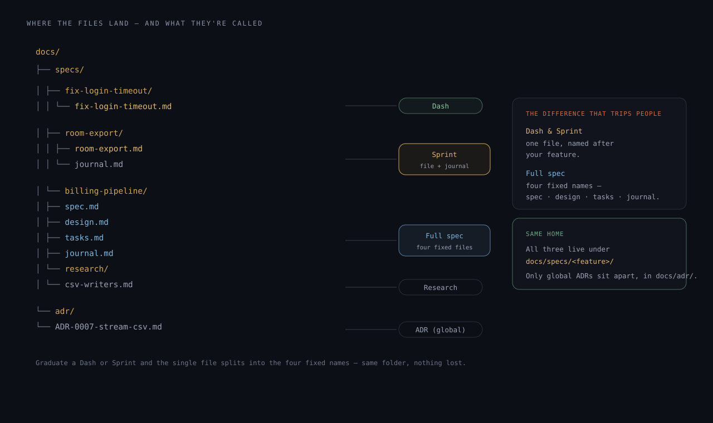
One tree, every document type — real paths, real filenames. illustration
| Type | Folder | File(s) | Named |
|---|---|---|---|
| Dash | docs/specs/<feature>/ | <feature>.md | after your feature |
| Sprint | docs/specs/<feature>/ | <feature>.md + journal.md | after your feature |
| Full spec | docs/specs/<feature>/ | spec.md · design.md · tasks.md · journal.md | fixed names |
| Research | docs/specs/<feature>/research/ | <topic>.md | after the topic |
| ADR (global) | docs/adr/ | ADR-NNNN-<slug>.md | numbered |
03Your first feature — by clicking
You don't start by memorising commands. Open the AFX panel and the moves are already on screen. This is the welcome view a fresh project greets you with — every highlighted spot is a button, not something to type.
 1
2
3
4
5
6
1
2
3
4
5
6
The real welcome screen — where a new feature actually begins.
Start planning
The Spec card's Plan opens traceable planning. Your first structured feature is a click away.
Start a sprint
The move we'd suggest first: one document, the whole discipline. Click it, give it a name, go.
Plan a new feature
The same flow, opened from a feature idea instead of a blank page.
"What do I do next?"
This button is /afx-next — it reads your project and tells you the next step. You'll lean on it daily.
Quick commands
Every command is one tap here too — for when you'd rather pick from a list than type.
How your message is sent
Default sends exactly what you type — no hidden prompt, no extra tokens. Ask, Architect, and Code change how a turn is handled.
Then it's six clicks to shipped
- Start — click Start a sprint (or the New SDD button in the Studio). Name it; the document and its journal appear.
- Spec — the action row offers Refine. Click it, add your pushback in plain words, send. When the score looks good, click Approve.
- Design, then Tasks — each step unlocks as you approve the one before. The buttons change to match wherever you are.
- Code — task tiles appear. Click one and the agent builds it, with links back to the spec baked in.
- Verify — click Verify on the tile; the evidence comes back. On the Work step, Sign Off adds your signature.
The one idea worth keeping: you approve the thinking before the agent writes the code. The buttons just make that fast.
No extension — running as skills in a terminal? The same feature, fully typed, is in the typed path.
/afx-next). It reads where you left off and hands you the next move — you never re-explain yourself.04The journey, end to end
One feature, six stops. We'll follow room-export — "export a room's ledger as CSV" — from a sentence to shipped code, showing exactly what you type, what AFX does, and which control does it in the chat. (Sprint track; the full spec is the same journey with one file per artifact.)
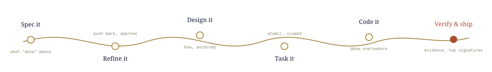
Say what "done" means
AFX does
- Scaffolds
docs/specs/room-export/room-export.md+journal.md - Drafts Problem Statement, User Stories, an FR/NFR table with sequential IDs, Acceptance Criteria, Non-Goals
You see
- The stepper appears: Spec ● Design 🔒 Tasks 🔒
- The doc opens in the previewer, Quality Pulse already grading it
/afx-sprint new room-exportPush back until it's right
AFX does
- Gap analysis: asks what's missing, tightens requirements in place
- Captures the discussion to
journal.md— decisions survive the session
You see
- Quality Pulse improving as gaps close; the Coach suggests what's still weak
- Open Questions shrinking to zero
/afx-sprint spec room-export--approve) — the Spec pill turns ✓ and Design unlocks.Decide how — with anchors
AFX does
- Authors the Design section from the approved spec:
[DES-ARCH],[DES-API],[DES-ERR]… - Every heading gets a
[DES-ID]code will link back to
You see
- Design ● active in the stepper; switch pills any time without losing the thread
- The Architect intent is your friend here (
⌃⌥M)
/afx-sprint design room-exportSlice it into provable pieces
AFX does
- Phases of
### N.Ntasks, each with checkbox criteria and a<!-- files: -->scope - A cross-reference index tying tasks back to FRs
You see
- The WBS dropdown fills with tasks — jump to any of them
- Approving the trio flips the document to
status: Approved
/afx-sprint task room-exportNow the agent writes code
AFX does
- Implements task by task, stamping
@see room-export.md [FR-1] [DES-ARCH]on every function - The drift guardrail keeps changes inside the task's file scope; big multi-file writes pause for your checkpoint confirmation
You see
- Code action tiles in chat per task; the Code intent takes over
- Work Sessions rows appearing as tasks land
/afx-sprint code room-exportEvidence, then two signatures
AFX does
- Per task: files exist?
@seebacklinks present? stray TODOs? session logged? - Routes you:
[OK]→ complete ·[PARTIAL]→ keep coding ·[MISSING]→ start
You see
- An evidence table per task; the agent's
[x]lands in Work Sessions - The Human
[x]column waits for you — nothing ships on the model's word alone
/afx-sprint verify room-export/afx-check trace finds no orphans. Scope grew along the way? graduate — losslessly.05In the extension, you click — the commands come to you
Everything in the journey above can be driven without typing a single slash command. The chat watches which AFX document is active — spec, design, tasks, journal, sprint, or dash — and surfaces that document's commands as dropdowns, buttons, and suggestions. Typed commands are the headless path; in VS Code, context does the driving.
The context engine
Open or select an AFX file and the chat header picks it up: a document chip shows what's active, the doc-actions dropdown fills with the right verbs, and the stepper reflects its approval state. Switch files, and the whole surface follows.
| Active document | The dropdown offers |
|---|---|
spec.md | Refine · Author · Validate · Review · Approve |
design.md | Refine · Author · Validate · Review · Approve — gated until the spec is approved |
tasks.md | Pick · Code · Verify · Status · Brief |
journal.md | Recap · Promote (discussion → ADR) |
| Sprint file | The section commands per pill, plus Sign off — same actions, one document |
| Dash file | The task actions (Pick · Code · Verify) work directly on its ### N.N tasks |
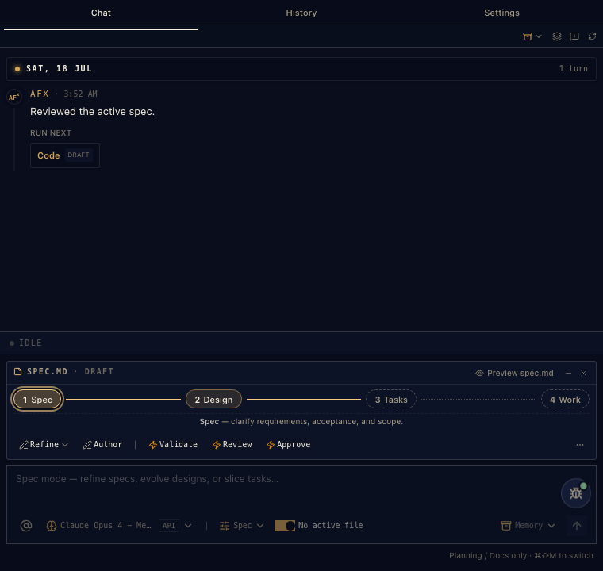
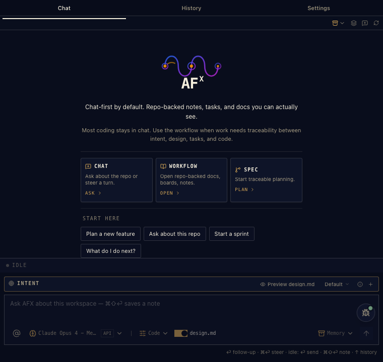
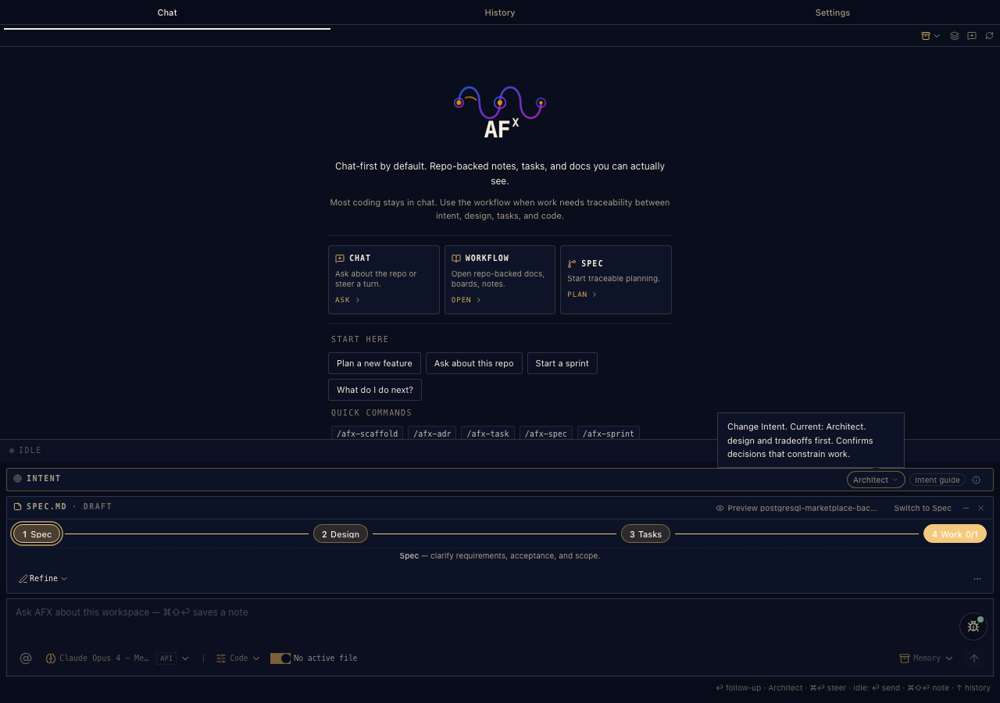
The switcher, expanded — every entry is one of the slash commands from this guide, pre-targeted at the active document.
The dynamic strip — the row that follows you
Directly under the four pills lives the action strip. It re-resolves on every pill click and file switch — and it knows sprint from standard. Two behaviors, by design:
- Some buttons draft first. Refine, Author, Note, Capture drop their command into the composer and wait — because they're better with your context attached. Add your pushback, then send.
- Some buttons run right away. Validate, Review, Approve, Verify, Status run immediately — there's nothing to add.
The strip's header also carries the Memory menu — Session Memory (re-load the context bundle, re-orient) and Discussion actions — so continuity is one click away from wherever you are.
 1
2
3
4
5
6
7
1
2
3
4
5
6
7
The real thing — every numbered spot is a button that runs a command for you.
Run next
After a reply, the next sensible move shows up as a button. Code · DRAFT means it'll write the command into the box for you to look over first.
Preview
Opens the full previewer for this file — the desk from the last section.
The four steps
Spec · Design · Tasks · Work. Click to move between them; the buttons below change to match wherever you are.
What you're doing now
A one-line reminder of the current step — no guessing where you are.
Refine
The same as typing /afx-spec refine — it drops the command in the box so you can add your take, then send.
Approve
The same as /afx-spec approve — runs straight away, locks this step, and opens the next.
Model
Switch models mid-conversation, right from the bar.
Surgical commands from the previewer
The previewer doesn't just render documents — it dispatches targeted commands. Three levels of precision:
- Whole document: the header actions — Refine, Validate, Review, Approve for the doc that's open.
- One section: every Quality Pulse signal and Coach suggestion carries its own fix command, aimed at that section. "Success metrics missing → Add metrics" sends a command about that gap, not the whole file.
- One task: task rows execute individually — Code or Verify exactly
2.1, straight from the rendered checklist. Work Sessions has its own host action to approve the section.
Each dispatch chooses draft-or-send the same way the strip does — surgical and polite about your context.
Every command has a button
You never have to memorise the command line. Here's the whole map — type the left column, or click the middle one; they run the identical skill.
| You could type | You can click | Where it lives |
|---|---|---|
/afx-next | What do I do next? · Run next | Welcome screen · above any reply |
/afx-spec refine | Refine | Action strip, Spec step |
/afx-design author | Author | Action strip — starts the next document |
/afx-spec validate · review | Validate · Review | Action strip |
/afx-spec approve | Approve | Action strip · or the stepper per step |
| (human sign-off) | Sign Off | The Work step |
/afx-task pick | Pick | Action strip, Tasks step |
/afx-task code 1.1 | Code · a task tile | Action strip · one tile per task |
/afx-task verify · status | Verify · Status | Action strip / task tile |
/afx-session note · promote | Note · Promote | Action strip, journal open |
/afx-adr review · supersede · list | Review · Supersede · List | Action strip, ADR open |
/model | the model picker | Composer bar |
| switch mode | Spec · Code · Explore | Status bar · Ctrl+Shift+M |
/afx-sprint spec room-export --approve run the identical skill. Learn one, you've learned both — the buttons are just the commands wearing context.06The previewer — where a document comes alive
This is the surface most people fall for. It takes a plain markdown file in your repo and turns it into a working desk: it grades the document while you write, names exactly what's weak, and hands you a one-click fix — all without you typing a command. Hover the numbered spots; here's what each one is.
The same file, twice
Here's what "living document" actually means: on the left is the plain spec.md sitting in your repo — text you could write in any editor. On the right is that exact file opened in the previewer. Same bytes; one is a file, the other is a working desk.
The raw file · spec.md
---
afx: true
type: SPEC
status: Living
owner: "@rix"
version: "1.0"
---
# App Workbench Canvas — Product Specification
> **As-built.** Canonical canvas spec; FR/NFR/DES
> anchors are stable so code @see links resolve here.
## References
- **Parent spec**: App Workbench; host: Workbench Shell.
- **Scope boundary**: a freeform ideation surface,
not a knowledge graph (see [DES-ROLLOUT]).
- **Settings owner**: 214-app-chat-settings hosts
the Experimental toggle ([FR-22]).
## Problem Statement
Spec-driven development has a cold-start problem: the
blank spec.md front-loads…The previewer

Nothing proprietary on the left — delete the extension and it's still a clean markdown file. The extension just does more with it.
Now, every live part of that right-hand side
1
2
3
4
5
6
7
8
9
10
A real spec.md from the AFX repo, open in the previewer — every number is a live part of the UI.
The real file
That path up top is an actual file in your repo — not an export or a copy. Edit it in your editor and this updates.
Its current state
Type, Living/Draft/Approved, version, owner, last change — read straight from the top of the file.the state decides which actions are open
Actions, on the page
The whole document's toolkit sits right here.click Refine to improve it in chat · Approve to lock it
It says what is
The document reads in the present tense — what's true now. History goes to the journal, so this never rots into a changelog.
A requirement you can hold onto
[FR-22] is a stable ID. Code that builds it carries @see … [FR-22].hover it in your code to preview this line · click to jump here
It grades itself
Quality Pulse scores the doc as you write — Strategy, Structure, Clarity, Completeness. "Needs pass · 18 sections · 1 to review."live — there's no command to run
It names what's weak
Not "could be better" — a specific miss, in amber: Success metrics missing. You always know exactly what to fix.
And offers the fix
The coach explains why it matters, then gives you the button — Add metrics sends the exact command for that gap.one click, targeted — not a rewrite of the whole file
It catches decisions
Spotted a decision or a resolved question in your chat? It nudges you to save it before it evaporates.keeps the "why" from getting lost
Everything's one click away
The outline keeps big documents navigable — jump to any section without scrolling.
It reads the room
The same surface adapts to whatever document you open — a design gets its [DES-…] anchors and design actions; a task list turns its rows into things you can actually run.


07The documents, annotated
Each template is plain markdown you could write by hand — and every part of it powers something in the extension. Here's the map.
spec.md — anchors the extension can hold on to
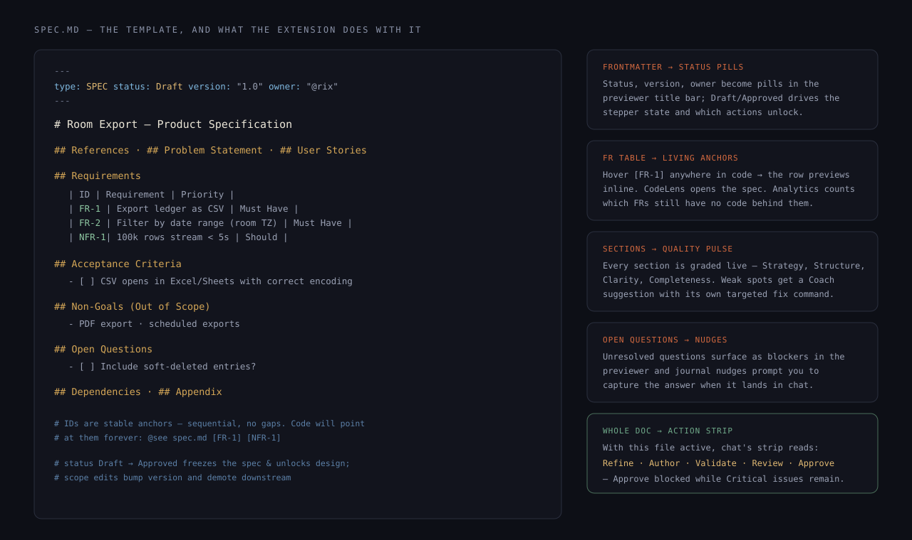
spec.md — every template part, mapped to what the extension does with it. illustration
journal.md — the part everyone underestimates
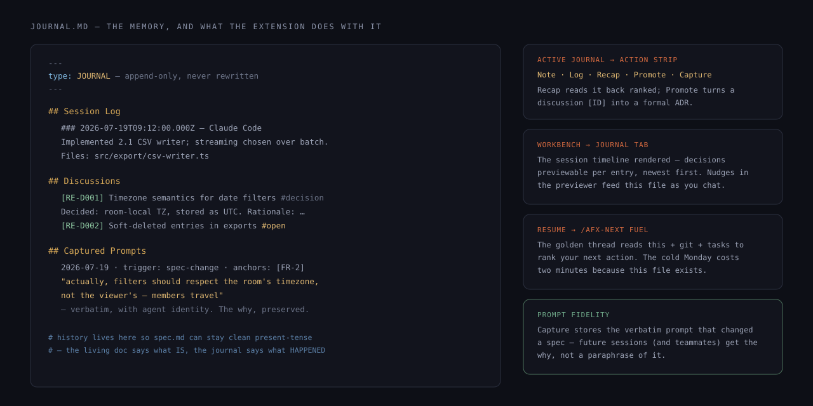
journal.md — why the living docs can stay clean: history lives here, and three surfaces feed on it. illustration
The rest of the family
- design.md — the
[DES-*]anatomy is annotated in the Sprint document illustration; standard mode is the same sections promoted one heading level. Every anchor is hover-able and CodeLens-linked from code. - tasks.md — the
### N.N/ checkbox / file-scope anatomy is annotated in the Dash document illustration — identical bones, which is what makes graduation lossless. In the previewer, each task row is executable. - Sprint & Dash — single-file anatomies with their approval and escalation rails, in their own sections below.
08Dash — structure for surgical work
A bug fix deserves better than an unrecorded chat, but not a spec. Dash is Purpose + Tasks in one file — no approvals, no status, no version. Progress is the task state.
The document
Lives at docs/specs/<name>/<name>.md with type: DASH. Two sections you write, one the workflow appends:
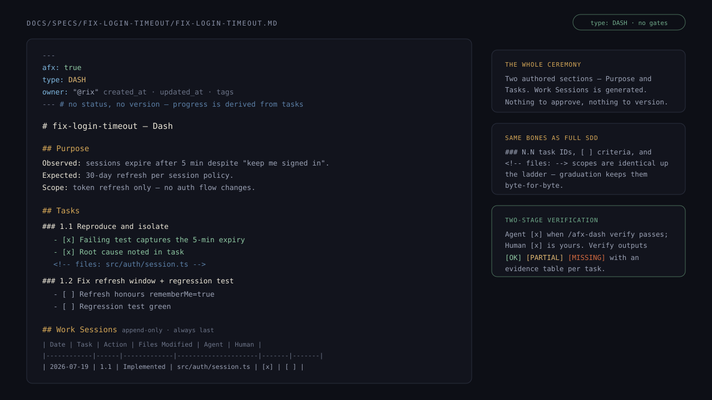
A Dash, 1:1 — Purpose says why, Tasks say what done means, Work Sessions says what happened. illustration
The commands
| Command | What it does |
|---|---|
/afx-dash new <name> | Create the Dash from its template — Purpose first, then task groups with checkbox criteria and <!-- files: --> scopes. |
/afx-dash refine | Adjust Purpose or Tasks as understanding sharpens. |
/afx-dash code [task-id] | Implement a task — delegates to the shared /afx-task code engine, so @see traceability and the drift guardrail apply here too. |
/afx-dash verify | Evidence check per task: files exist, @see backlinks present, session logged → [OK] / [PARTIAL] / [MISSING]. |
/afx-dash graduate --to sprint|full | Expand losslessly. Purpose seeds the Sprint's problem statement; tasks, checkboxes, and Work Sessions move unchanged. Missing spec/design content becomes explicit Draft material — approval is never invented retroactively. |
09Sprint — the whole discipline, one file
Spec, Design, and Tasks as numbered sections of a single document, each behind its own approval. This is where most features should live — and the recommended starting point.
The document
docs/specs/<feature>/<feature>.md with type: SPRINT, plus a companion journal.md. The frontmatter carries the approval state per section:
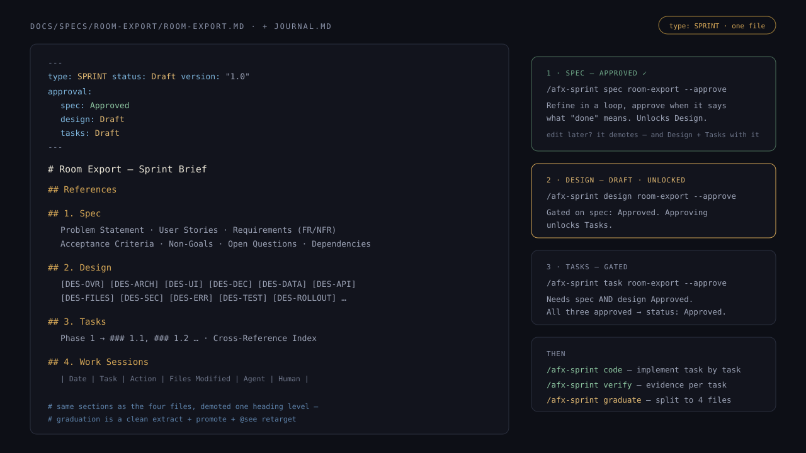
A Sprint, 1:1 — the approval block in frontmatter is the state machine; sections unlock in order. illustration
The gates — how approval actually works
| Command | Prerequisite | --approve effect |
|---|---|---|
/afx-sprint spec | none | approval.spec → Approved |
/afx-sprint design | spec Approved | approval.design → Approved |
/afx-sprint task | spec and design Approved | approval.tasks → Approved — all three approved flips the document to status: Approved |
/afx-sprint code | all three Approved | — |
/afx-sprint graduate | all approved and verify passes | — |
Working it
The rhythm is refine → approve → next section. In chat, the Spec-mode stepper shows exactly which section is live; in the previewer, Sprint documents render with the same doc actions as full specs. When all three sections are approved, code walks the tasks with the shared implementation engine, and verify demands evidence per task.

A real Sprint in the previewer — this one you can click through in the extension today.
Graduating
/afx-sprint graduate splits the one file into spec.md / design.md / tasks.md (your journal.md already exists), promotes headings one level, and retargets every @see path. FR numbers, DES anchors, and task IDs survive verbatim — code that pointed at the sprint keeps resolving.
10The full spec — four files, formal gates
For work that outlives a sitting: cross-cutting features, multi-team coordination, security boundaries, migrations. Every document gets its own file, its own lifecycle, and its own approval.
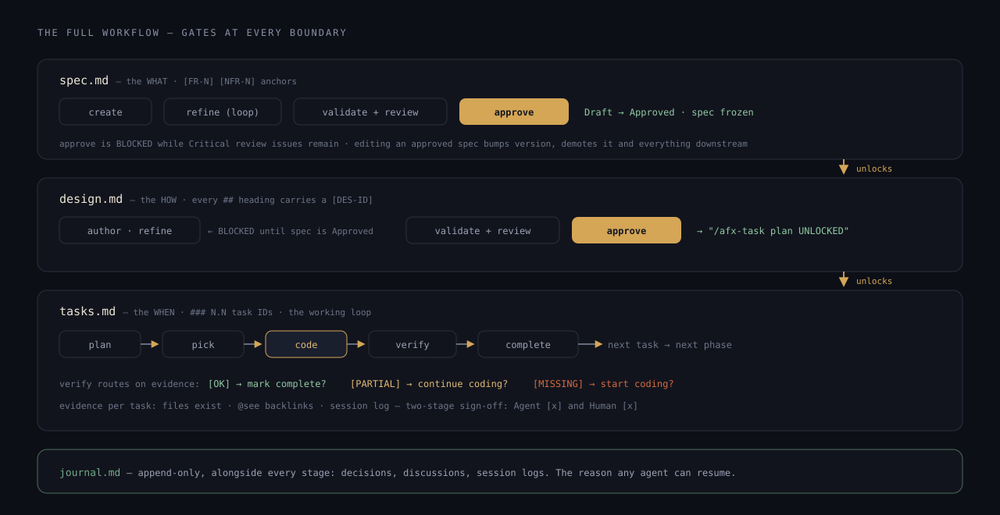
The whole machine — approval at each boundary unlocks the next artifact. illustration
spec.md — the WHAT · /afx-spec
Requirements with stable [FR-N] / [NFR-N] anchors (sequential, no gaps) that code links back to forever. The template's sections: References · Problem Statement · User Stories · Requirements (Functional / Non-Functional) · Acceptance Criteria · Non-Goals · Open Questions · Dependencies · Appendix.
| Command | What it does |
|---|---|
create | Scaffold the spec directory with all four artifacts. |
refine | Requirements via interactive gap analysis, captured to the journal. Loop until it says what "done" means. |
validate | Deterministic structure check — required sections, frontmatter, sequential FR/NFR IDs. Blocking for approval. |
review | Quality scoring: completeness, consistency, gaps, risk. |
approve [--reviewer "@handle"] | Runs validate + review, blocked while Critical issues remain. Then Draft → Approved, spec freezes, design unlocks. --reviewer adds human sign-off on an already-approved spec. |
Statuses: Draft → Approved → Superseded. Editing an approved spec in a way that changes scope bumps the version and reverts to Draft — downstream demotes with it.
design.md — the HOW · /afx-design
Architecture with a [DES-ID] on every ## heading — [DES-OVR], [DES-ARCH], [DES-API], [DES-SEC], and the rest — plus at least one @see spec.md [FR-X] so the design provably serves the spec.
| Command | Gate |
|---|---|
author / refine | Blocked until the spec is Approved. Try early and you get a BLOCKED message pointing you to /afx-spec review → approve. |
validate / review | Structure blocks approval; quality review is advisory. |
approve | Draft → Approved, and the output tells you plainly: /afx-task plan UNLOCKED. |
tasks.md — the WHEN · /afx-task
The working loop. plan (gated on approved design) generates phases of ### N.N tasks; then it's pick → code → verify → complete, task after task, phase after phase.
| Command | What it does |
|---|---|
plan / refine | Generate or refine tasks.md from the approved design. |
pick {id} | Check out a task as active. |
code {id} · code all | Implement with @see traceability — the drift guardrail keeps changes inside the task's file scope. |
verify <spec>#<id> · verify all | Evidence check: files exist · @see backlinks · no stray TODO/FIXME · session logged. Routes you: [OK] → complete? · [PARTIAL] → continue? · [MISSING] → start? |
complete {id} | Mark done, move to the next task or phase. |
status · summary {id} · sync | Phase overview · what-was-built brief · bidirectional GitHub sync. |
tasks.md in the previewer — Pick, Code, and Verify are buttons here, not commands you memorise.
verify earns the agent's [x]; the human one is yours to give. Nothing is "done" because a model said so.11Two more you'll create along the way
Specs, designs, and tasks are the spine. Two supporting documents show up as real work happens — a decision worth remembering, or a question worth investigating first.
ADR — a decision, on the record
type: ADRdocs/adr/ADR-NNNN-<slug>.mdUse it when you make a call that someone will later ask "why?" about — a library choice, an API shape, a trade-off. It captures the decision and the roads not taken, so the reasoning outlives the moment.
---
afx: true
type: ADR
status: Accepted # Proposed | Accepted | Rejected | Deprecated | Superseded
version: "1.0"
---
# ADR 0007: Stream CSV exports instead of buffering
## Context
Rooms hold 100k+ ledger entries; buffering the whole file blows memory.
## Decision
Stream rows straight to the response with a bounded writer.
## Rationale
Constant memory, first byte < 200ms. Buffering failed NFR-1.
## Consequences
+ Handles any room size. − No total row-count until the stream ends.
## Alternatives Considered
- **Buffer then send**: simplest, fails at scale. Rejected.
- **Paginate + stitch client-side**: pushes work to callers. Rejected.Global ADRs live in docs/adr/; a decision scoped to one feature can live in that feature's research/ folder. Superseding one keeps the old record and links forward — history is never deleted.
Research — think before you commit
type: RESdocs/specs/<feature>/research/<topic>.mdUse it when the answer isn't obvious yet — comparing options, checking a constraint, exploring an unknown. Do the digging in a research note, land on a recommendation, then promote it into an ADR or straight into the spec.
---
afx: true
type: RES
tags: ["research", "csv-export"]
---
# CSV writer options for large exports
## Context
Which approach meets NFR-1 (100k rows < 5s) without wrecking memory?
## Findings
### Native streaming
Constant memory; ~200ms first byte at 100k rows.
### Buffered library
Cleaner API, but 1.2 GB peak at 100k rows.
## Analysis
Streaming is the only option that meets the NFR at scale.
## Recommendations
- Use native streaming; revisit a library only for RFC 4180 edge cases.
## References
- jsoncanvas.org/spec, internal benchmark run 2026-07-18
## Next Steps
- Promote the streaming decision to an ADR.Research sits next to the feature it informs. When a finding hardens into a decision, /afx-research promote (or /afx-session promote for a chat discussion) turns it into an ADR — the note stays as the trail of how you got there.
docs/specs/<feature>/ — spec, design, tasks, journal, sprint or dash files, and a research/ subfolder — except global ADRs, which sit in docs/adr/. All plain markdown, all in your repo, all diffable.12The assisted loop — the extension does the typing
This is why the extension exists: the ceremony is real, the typing isn't. After every action, the next sensible steps appear as clickable suggestions — you steer, AFX writes the commands.
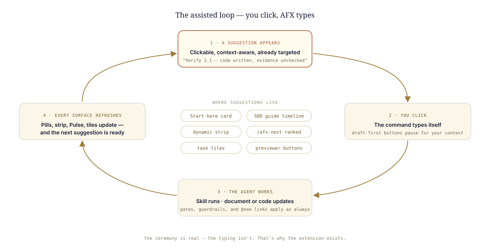
The loop. Six places feed it suggestions — all pre-targeted at your active document. illustration
The guide that walks with you
Generated documents come with a phase-aware timeline in chat: where the feature stands, what's next, and one-click jumps to the previewer or the Studio.

The SDD guide in chat — next actions as buttons, not homework.
Next actions, ranked and clickable
/afx-next output renders as buttons in the extension — the ranked list you saw earlier becomes one-click continuations.
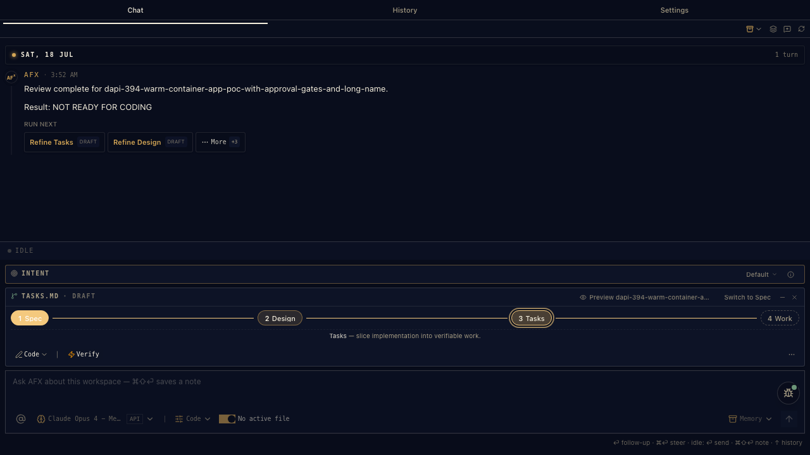
Real capture — the golden thread, clickable.
The cockpit view
SDD Studio shows every feature's documents in columns, with inline actions that hand off to chat with context attached — Refine spec and Code all are clicks here too.

SDD Studio — Overview, Focus, and Compare modes over the same four columns.
Tasks as tiles
When implementation starts, tasks surface as tiles — one click runs the coding engine for exactly that task.
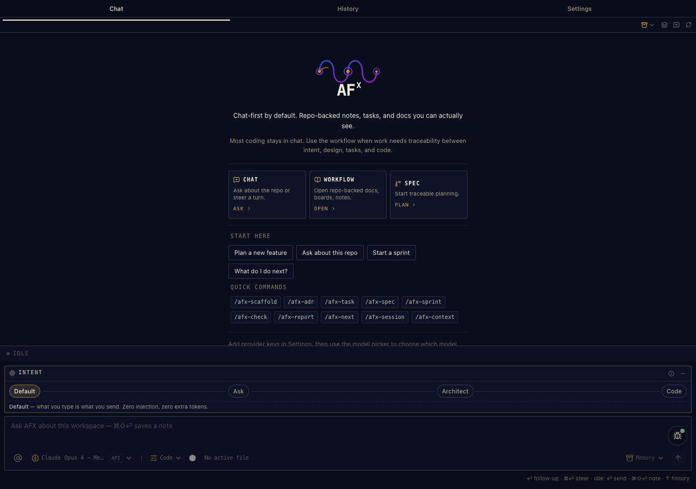
One tile, one task, one click.
13Staying oriented
SDD's superpower isn't the documents — it's that any session, any agent, any day can pick up exactly where the last one stopped.
/afx-next— the golden thread. Reads git state, active tasks, and session history; answers "what do I do now?" with a ranked list./afx-session note/capture— capture decisions as they happen;capturestores the verbatim prompt that changed a spec, so future sessions know why./afx-context save/load— bundle spec state, task progress, and open questions for a clean handoff to the next agent (or the next you).
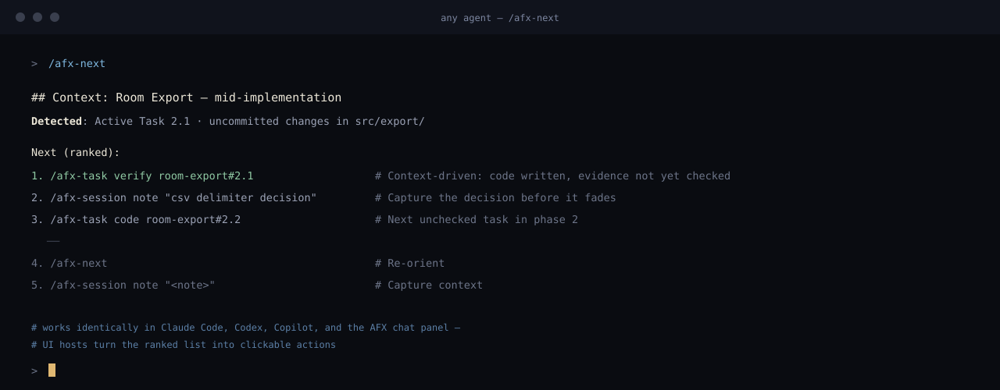
/afx-next, 1:1 — the same ranked output in every agent; UI hosts make the list clickable. illustration
14Use cases — pick your situation
Real situations, start to finish. Copy the sequence, change the names.
The hotfix
Dash~20 min"Sessions expire after 5 minutes even with 'keep me signed in'. Fix it, prove it, move on."
/afx-dash new fix-login-timeout "sessions expire at 5min despite rememberMe"
/afx-dash code 1.1 # reproduce with a failing test
/afx-dash code 1.2 # fix the refresh window
/afx-dash verify # [OK]? both tasks evidence-checkedNo approvals, no ceremony — but the fix has a Purpose, criteria, @see links, and a session log. Future-you knows why this change exists.
The solo feature
Sprint~half a day"CSV export for room ledgers. I know roughly what I want; I want the discipline without four files."
/afx-sprint new room-export
/afx-sprint spec room-export --approve # refine until criteria read like tests
/afx-sprint design room-export --approve # streaming vs batch — decided, anchored
/afx-sprint task room-export --approve # status flips to Approved
/afx-sprint code room-export
/afx-sprint verify room-exportThis is the journey above — the recommended default for most features.
The team feature
Full specdays–weeks"New billing pipeline. Security review required, three people involved, work spans sprints."
/afx-spec create billing-pipeline
/afx-spec refine billing-pipeline # loop with the team's input
/afx-spec approve billing-pipeline
/afx-spec approve billing-pipeline --reviewer "@lead" # human sign-off on record
/afx-design author billing-pipeline && /afx-design approve billing-pipeline
/afx-task plan billing-pipeline
/afx-task sync billing-pipeline # tasks ↔ GitHub issues, bidirectional
# then the loop, per engineer: pick → code → verify → completeFormal gates at every artifact, a named reviewer in frontmatter, and GitHub issues as the living execution log.
The investigation
Explore → Sprint~1 hr"Something's wrong in the sync engine, root cause unknown — and maybe there's a product gap behind it."
# Ctrl+Shift+M → Explore (read-only, guardrails on)
"Trace how sync conflicts are resolved. Where can data be lost?"
# PRD intent: turn findings into requirements
# then: Ctrl+Shift+M → Spec
/afx-sprint new sync-conflict-handling # findings become the Problem StatementExplore guarantees the investigation touches nothing; the PRD intent turns what you learn into the seed of a real spec.
The cold Monday
Any rung~2 min"It's been a week. What was I even doing?"
/afx-next
## Context: room-export — mid-implementation
Detected: Active Task 2.1 · uncommitted changes in src/export/
1. /afx-task verify room-export#2.1 # code written, evidence not yet checkedThe journal remembers, the tasks remember, /afx-next reads it all back. Nothing lives only in your head.
15No extension? The typed path
Running AFX as skills only — in Claude Code, Codex, or Copilot? Everything in this guide works by typing. Same skills, same gates, same files; you supply the keystrokes the extension would have saved you.
Sprint, typed
/afx-sprint new room-export
/afx-sprint spec room-export --approve # refine until criteria read like tests
/afx-sprint design room-export --approve # unlocked by spec
/afx-sprint task room-export --approve # unlocked by design
/afx-sprint code room-export
/afx-sprint verify room-exportThe full four files, typed
/afx-spec create my-feature
/afx-spec refine my-feature # loop until it says what "done" means
/afx-spec approve my-feature
/afx-design author my-feature && /afx-design approve my-feature
/afx-task plan my-feature
/afx-task pick && /afx-task code 1.1
/afx-task verify my-feature#1.1 && /afx-task complete 1.1--approve run the identical skill. The extension's advantage is the suggestions and the context targeting — never extra capability. Nothing here is a second-class path.—Cheat sheet
Everything above, one screen. For the terminal-first among us.
Dash
/afx-dash new <name> · refine · code [task-id] · verify · graduate --to sprint|fullSprint
/afx-sprint new <feature> · spec|design|task <feature> [--approve] · code · verify · graduate
# gates: spec → design → task · all approved → status: Approved · edit = demote downstreamFull spec
/afx-spec create · refine · discuss · validate · review · approve [--reviewer "@handle"]
/afx-design author · refine · validate · review · approve # blocked until spec Approved
/afx-task plan · pick {id} · code {id}|all · verify <spec>#<id>|all · complete · status · summary · syncStates
document status Draft → Approved → Superseded
sprint approval approval.spec / .design / .tasks : Draft | Approved
verify results [OK] implemented · [PARTIAL] continue coding · [MISSING] start coding
task sign-off Agent [x] + Human [x] — two-stage, alwaysAlways available
/afx-next · /afx-session note|log|recap|capture · /afx-context save|load · /afx-check trace|path|all